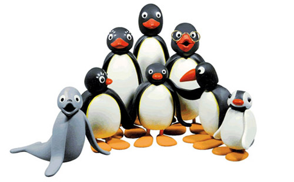
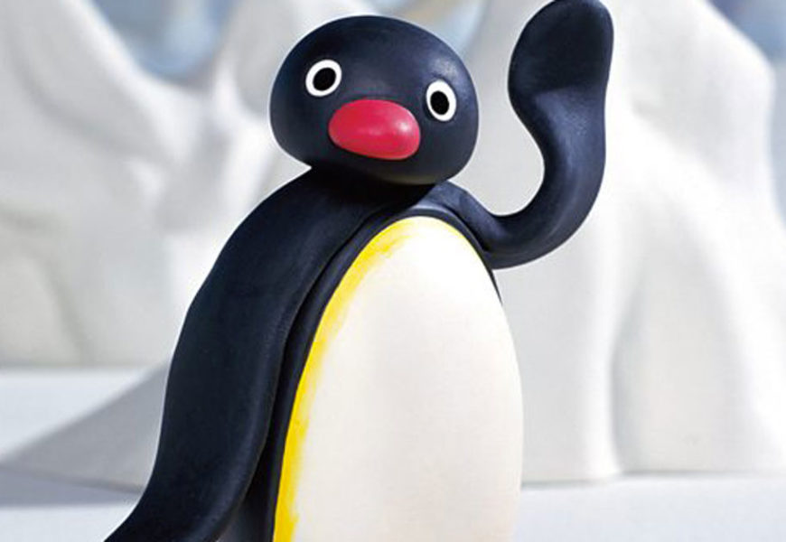

Pingu è una serie animata svizzera creata da Otmar Gutmann e realizzata in claymation. È stata trasmessa in
televisione dal 7 marzo del 1990 fino al 9 aprile 2000 sul canale svizzero Schweizer Fernsehen per un totale
di 104 episodi da 5 minuti ciascuno. In seguito all'acquisizione dei diritti da parte di BBC sono stati
prodotti altri 52 episodi dal 2003 al 2006 e trasmessi sul canale britannico BBC Two.
Le vicende si svolgono sempre al polo sud. Pingu è realizzato tramite una tecnica d'animazione denominata
claymation. Del cartone è stato creato un anime sequel chiamato Pingu in the City la cui trama vede la
famiglia di Pingu che si trasferisce dal villaggio alla città dove le persone svolgono lavori diversi. Lo
show è diretto dallo studio Polygon il quale ha deciso di fare l'anime in CGI invece di usare il classico
stile di claymation. Ad accreditare il cartone sono Kimiko Ueno e Shinegori Tabate mentre Naomi Iwata si
occupa della scenografia e Ken Arai compone le musiche.
In Italia la serie è stata interamente trasmessa su Rai 1.
Trama
La serie descrive le vicende di una famiglia di pinguini che vive al polo sud composta da Pingu, il personaggio principale, dalla sorella minore Pinga e dai loro genitori. Il migliore amico di Pingu è Robby, una foca.
Personaggi
Questi sono i personaggi principali della serie:
- Pingu: è il protagonista della serie. La sua età è verosimilmente tra i 5 e i 7 anni. Tende spesso ad usare il becco come se fosse una tromba quando è arrabbiato o felice. È gentile ed educato e a volte capriccioso. Ha una cotta per Pingi ricambiato.
- Pinga: è la sorella minore di Pingu. Appare per la prima volta nell'episodio È nata Pinga. Nella maggior parte degli episodi ha un'età di circa 18 mesi. Pingu diventa geloso quando lei rimane a casa mentre lui deve andare a scuola. Spesso però mostra anche l'affetto che ha per lei coccolandola e facendola giocare (e lei, dal canto suo, segue sempre il fratello quando si sposta).
- Mamma e Papà: il papà di Pingu è un postino, infatti ha una motoslitta con la quale consegna la posta e fuma spesso la pipa. La madre di Pingu rimane molto del suo tempo a casa nell'igloo. Mamma e papà si dividono molto il lavoro domestico, ad esempio cucinare, stirare ed altri compiti.
- Nonno: è il nonno di Pingu e costruisce strumenti musicali.
- Robby: è la foca miglior amica di Pingu. Il suo nome è particolare: "Robbe" in tedesco significa appunto foca.
- Pingi: è la fidanzata di Pingu.
- Pingo: è un amico di Pingu con un becco lungo. Solitamente spinge Pingu a fare bravate.
- Pingg: un altro amico di Pingu.
- Pongi: è un amico di Pingu che porta gli occhiali.
- Punki: sempre un amico di Pingu.
- Perlinga: è la maestra dell'asilo di Pinga.
Lingua
Una delle ragioni del successo internazionale di Pingu è la mancanza di qualsiasi dialogo verbale
comprensibile di senso compiuto. Tutti i dialoghi sono infatti in un fantomatico "linguaggio dei pinguini"
("pinguinese"), un grammelot incomprensibile ideato dal creatore Gutmann e interpretato nei primi 104
episodi dal doppiatore Carlo Bonomi (lo stesso de La Linea, che infatti presenta un linguaggio analogo).
Dall'episodio 105 in poi viene interpretato da Marcello Magni e David Sant.
Tale linguaggio è privo di ogni significato (fatte salve alcune parole usate casualmente), ed è possibile
ipotizzare cosa i personaggi si dicano nei dialoghi solo attraverso lo scorrimento delle immagini. Ciò
agevola lo sviluppo delle capacità intellettive dei più piccoli e li proietta verso una comprensione che si
basa esclusivamente sull'intuito. Inoltre tale fatto rende il format molto economico da distribuire, in
quanto non necessita di ridoppiaggi in altre lingue. Tale linguaggio ha dato origine a numerose parodie
comiche facenti leva sul cosiddetto fenomeno mondegreen, nelle quali le battute dei personaggi vengono
trascritte foneticamente in dei sottotitoli, creando frasi sconnesse e senza senso compiuto, come ad esempio
messaggi subliminali o parole a doppio senso, citando persino personaggi famosi e immaginari.
Talvolta nemmeno lui capisce cosa gli si dice
Sigla
La sigla animata della serie nelle prime stagioni era un jingle strumentale ideato dagli autori del cartone fino al 1993. Dal 1993 la nuova sigla è la Pingu Dance, cantata dall'attore e cantante americano, volto principale delle serie televisive Supercar e Baywatch, David Hasselhoff.
Episodi
Troppi per essere copiati tutti
Trasmissione nel mondo
La serie fu trasmessa in Italia dalla RAI, nel Regno unito sulla BBC, nella Svizzera tedesca sulla SF, negli USA su Cartoon Network, in Canada su YTV, in Australia sulla ABC e in Francia su France 3.
